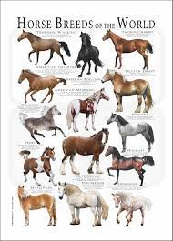

Many different breeds of horses whether it be domestic or wild.These are just some examples of them.

Although there is alomost no diffrence look wise except for colors and of course being wild.Horses have been used since they came to be to pull trailers and be ridden.
A double border.
Horses are herd animals. Which are led by a hierarchy of rank. A mare is usually the dominant individual.
Although there are as many as 400 different breeds.There is only one species of horse.
It took thousands of years to breed th horses you see today. People have bred diffrent breeds to get the desired traits they want.Basic body types are.....
Halflingers are usually pony sized 200 to 1500lbs. Oldenburg are usually regular sized horses 800 to 1500 lbs. Belgian draft are anything that is bigger than an oldeburg 1400 to 2700 lbs. They come in a vast array of colors.